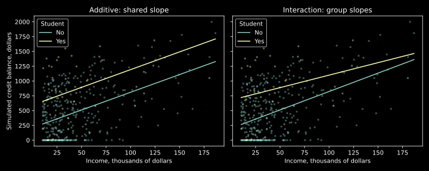
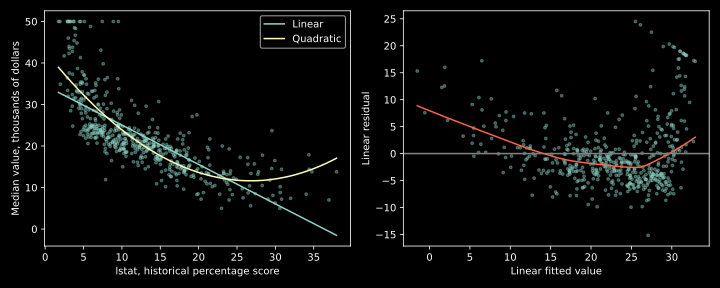

IIT Hyderabad · NPTEL · Independent study edition
Nonlinear features and interaction effects
11.1 A group difference can depend on income
An additive credit-balance model gives students and nonstudents different intercepts but a common income slope. Its two fitted lines are parallel. If the association between income and balance differs by recorded student status, a constant offset cannot represent it. An interaction expands the mean model to allow the group difference to change with income.
Let $x$ denote income measured in thousands of dollars and $d\in\{0,1\}$ indicate student status, with $d=1$ for Yes. Define the conditional-mean model $$m(x,d)=\beta_0+\beta_xx+\beta_dd+\beta_{xd}xd. \tag{11.1}$$ All four coefficients are real. The additive model is the special case $\beta_{xd}=0$. Substituting the two indicator values gives $$m(x,0)=\beta_0+\beta_xx,\qquad m(x,1)=(\beta_0+\beta_d)+(\beta_x+\beta_{xd})x. \tag{11.2}$$ Thus $\beta_{xd}$ is a difference of income slopes. It is not the correlation between the two predictors. Predictors can be independent in a balanced design while their product is necessary to describe the response mean.
The modeled difference between student groups is $$m(x,1)-m(x,0)=\beta_d+\beta_{xd}x. \tag{11.3}$$ Consequently $\beta_d$ is the group difference specifically at income zero. It is no longer a universal difference applying at every income. A nonzero interaction changes the interpretation of the lower-order coefficients because each is evaluated at a particular reference value of the other predictor.
In R and Patsy formulas, Income * Student expands to the two main terms and their interaction. It is equivalent to Income + Student + Income:Student under the same category coding. Multiplication inside a data transformation and the star operator in a formula have related but different roles: the formula operator requests the lower-order terms as well. The laboratory checks that the two formula spellings produce identical fitted responses.
Source discussion: Credit example and interaction formulas. Formula conventions are documented by Patsy.
11.2 Centering changes a reference, not a fitted surface
A contrast evaluated at income zero may be far from the comparison of interest. Choose a reference income $c$ and define $z=x-c$. Substitute $x=z+c$ into (11.1): $$m(z+c,d)=(\beta_0+c\beta_x)+\beta_xz+ (\beta_d+c\beta_{xd})d+\beta_{xd}zd. \tag{11.4}$$ The group coefficient is now the group difference at $x=c$. The slope difference remains $\beta_{xd}$, and every fitted value is unchanged. The laboratory centers at the observed mean income and verifies this identity numerically.
Retaining the lower-order terms is essential to this invariance. A model containing only $xd$ imposes a zero effect for nonstudents and a line through the selected origin for students. Replacing $x$ by $x-c$ without adding the induced group and intercept terms generally changes its fitted space. The common practice of retaining main effects with an interaction therefore has a precise benefit: reference changes remain reparameterizations of the same family.
For two numerical predictors, the model $\beta_0+\beta_1x+\beta_2z+\beta_3xz$ has partial derivative $\partial m/\partial x=\beta_1+\beta_3z$. An estimated slope depends on the value held fixed for the other predictor. The cross-partial derivative is $\beta_3$. These are properties of the specified conditional mean; they do not convert observational associations into intervention effects.
One can also express the interaction through a difference of differences. For two incomes $x_a,x_b$, subtract the group difference at $x_a$ from that at $x_b$. Equation (11.3) gives $\beta_{xd}(x_b-x_a)$. This algebra is useful for interpreting the fitted surface. A causal difference-in-differences design requires additional assumptions and is not implied by the algebraic resemblance.
11.3 Nonlinear predictors can still give linear regression
A mean $m(x)=\beta_0+\beta_1x+\beta_2x^2$ is nonlinear as a function of the predictor but linear as a function of the unknown coefficients. The design has columns $1,x,x^2$, so the projection and least-squares formulas from Chapter 8 still apply. Linearity in coefficients is the relevant distinction for this calculation.
At least three distinct predictor values are needed for these three columns to be linearly independent. If a linear combination $a_0+a_1x+a_2x^2$ vanished at three distinct values, that polynomial would have three distinct roots despite degree at most two; it must therefore have every coefficient zero. Conversely, only two distinct values cannot identify three arbitrary coefficients. Replication improves noise estimation but does not replace the missing predictor locations.
The local slope and curvature are $m'(x)=\beta_1+2\beta_2x$ and $m''(x)=2\beta_2$. The coefficient $\beta_1$ is the derivative at zero, rather than the slope everywhere. A positive quadratic coefficient produces upward curvature; it does not imply that the mean increases throughout the observed range. The linear term can dominate its derivative over part of that range.
Centering preserves the full quadratic model as well: $$\beta_0+\beta_1(z+c)+\beta_2(z+c)^2 =(\beta_0+c\beta_1+c^2\beta_2)+(\beta_1+2c\beta_2)z+\beta_2z^2. \tag{11.5}$$ The laboratory checks the fitted-value equality. Centering can improve the numerical relation between lower-order columns, but it cannot create information absent from the predictor distribution.
R's I(lstat^2) protects ordinary arithmetic from the formula parser. In Python's Patsy syntax, use I(lstat**2). Writing a power directly in a formula without understanding the parser can request interactions or term expansion rather than a squared numerical feature. Orthogonal polynomial bases can span the same polynomial space while producing different coefficients; compare fitted values after confirming that their spaces and preprocessing match.
Source polynomial example: Boston housing data and adding a squared predictor.
11.4 A richer fit needs a separate predictive assessment
Adding a column to a least-squares design cannot increase its minimized training SSE: the larger design can reproduce the smaller fit by setting the new coefficient to zero. Therefore a lower training error alone is not evidence that the additional term improves prediction on new observations. An exploratory residual plot can motivate a term, but assessment must evaluate the resulting full procedure.
The two Credit fits illustrate the distinction. The additive model gives an income coefficient $5.984335565$ and a student offset $382.670538843$. With an interaction, the nonstudent income slope is $6.218168737$, the student offset at income zero is $476.675843207$, and the slope difference is $-1.999150872$. At income values $20$ and $100$ on the thousands-of-dollars scale, the fitted student balance differences are $436.692825777$ and $276.760756056$ dollars, respectively.
The adjusted $R^2$ changes from $0.273818883$ to $0.274428277$. The prespecified nested-model F calculation for the added interaction gives $F=1.333432372$ and $p=0.248891851$. At significance level $0.05$, it does not reject the zero-interaction restriction under the usual normal-theory assumptions. The nonparallel fitted lines in Figure 11.1 illustrate the model's permitted shape, not independently established predictive improvement or a reliably nonzero slope difference.

For the historical Boston data, the source uses lstat, a percentage-based socioeconomic score, to model medv, median owner-occupied value in thousands of dollars. The Python port uses the actual two source columns extracted from MASS, preserving all 506 rows. The linear coefficients are $(34.553840879,-0.950049354)$; the quadratic coefficients are $(42.862007328,-2.332821098,0.043546889)$. Training SSE decreases from $19472.381418326$ to $15347.243158382$.
The scatter and residual pattern in Figure 11.2 motivate an expanded mean model. The quadratic's shape still extrapolates according to a particular polynomial, and the historical aggregate association is not a causal statement about a person or a contemporary housing valuation. The accompanying diagnostic panels reproduce the statistical roles of the source residual, Q-Q, scale-location, and leverage displays using Python.


The source also contrasts low-order models with interpolation. For $n$ distinct predictor values, a polynomial of degree at most $n-1$ can pass through all response values: $$P(x)=\sum_{i=1}^n y_i\prod_{j\ne i}\frac{x-x_j}{x_i-x_j}. \tag{11.6}$$ At $x=x_i$, its corresponding product is one and every other product is zero, proving interpolation. Distinct inputs make the denominators nonzero. Repeated inputs with conflicting responses cannot all be interpolated by any deterministic function. An exact training fit therefore depends on the design and is not a universal definition of a useful predictive model.
11.5 Python conversion and numerical witnesses
The laboratory converts the additive and interactive Credit models, the alternative expanded interaction formula, the group-specific fitted-line displays, the Boston linear fit, the scatter and diagnostic displays, and the quadratic feature fit. The two source datasets are available offline. No source method in this recording requires an unavailable Python equivalent.
Independent checks verify that the star and expanded formulas have the same fitted values, that income centering preserves the interaction fit, and that centering a full quadratic preserves its fitted values. A fresh R calculation on the same Credit and Boston rows provides an additional coefficient comparison. Reference-level and column-order transformations are made explicit before comparing arrays.
The lowess trend in the residual display is a descriptive smoother; it is not part of either regression fit. Graphics defaults such as colors, selected point labels, and panel spacing differ between the two environments. The conversion preserves the numerical models and the diagnostic quantities rather than claiming a pixel-identical R interface. Exact Python source and saved output are included in the laboratory.
Source comparisons: Credit fitted-line plots, Boston linear fit, diagnostic plots, and quadratic fit. Dataset definitions and historical source: MASS Boston documentation.
11.6 Exercises with worked solutions
Conceptual — interacting or correlated? Does an income-by-student term assert that income and student status are correlated?
Solution
No. It specifies how their combination enters the conditional response mean. Correlation describes the predictor distribution. A balanced experiment can make its two predictors independent while the response contains their product. Conversely, correlated predictors do not necessarily require a product in a correctly specified additive mean.
Conceptual — linear in what? Why can $\beta_0+\beta_1x+\beta_2x^2$ be fitted by ordinary linear regression?
Solution
Once the observed inputs are fixed, the three design columns are known. The mean is their linear combination with unknown coefficients. Squared predictor values make the response curve nonlinear in $x$, not nonlinear in the estimated coefficients. Full rank, appropriate error assumptions, and numerical conditioning still need checking.
Derivation — a contrast at a useful reference. Center income at $c$ in the binary interaction model and derive the student coefficient in the centered parameterization.
Solution
Substitute $x=z+c$. The terms involving $d$ become $(\beta_d+c\beta_{xd})d+\beta_{xd}zd$. Thus the student coefficient at $z=0$ equals the original group difference at income $c$. The slope difference is unchanged. Retaining the main terms allows this to be a basis change preserving every fitted value.
Derivation — the quadratic's reference slope. Show how centering a quadratic changes the intercept and linear coefficient while preserving curvature.
Solution
Expanding $(z+c)^2$ gives intercept $\gamma_0=\beta_0+c\beta_1+c^2\beta_2$, linear coefficient $\gamma_1=\beta_1+2c\beta_2$, and quadratic coefficient $\gamma_2=\beta_2$. The centered linear coefficient is the derivative at the reference input $c$. Since $2\gamma_2=2\beta_2$, curvature is unchanged. The laboratory verifies the resulting fitted-vector equality.
Computation — interpret the fitted Credit contrast. Run the source conversion and calculate the student difference at incomes 20 and 100. Does the line plot establish a statistically nonzero interaction at level 0.05?
Solution
Equation (11.3) with the executed coefficients gives $436.692825777$ and $276.760756056$. The nested test gives $p=0.248891851$, so it does not reject at level 0.05 under its reference assumptions. The plot illustrates different fitted slopes, not a separate significance test. Neither result alone measures held-out predictive utility.
Computation — compare polynomial fits. Run the Boston conversion and confirm the SSE change. Explain why repeating this comparison over many degrees requires a different assessment protocol.
Solution
The linear and quadratic SSE values are $19472.381418326$ and $15347.243158382$. Adding the squared column enlarges the fitted space, so training SSE cannot increase. Trying many degrees and selecting the lowest training error uses the same responses repeatedly. A held-out or properly nested resampling assessment must repeat the feature-selection procedure inside training; evaluating only the finally selected fit on data already used to choose it does not estimate the intended new-data performance.
Interactions and polynomial columns repair specific restrictions on the conditional mean. A remaining structured residual sequence can instead reflect dependence between observations. The next chapter develops that separate issue and shows why fitting a more flexible mean does not automatically repair uncertainty under correlated errors.
Python laboratory
Run labs/ch11.py from the course folder.
Data and figure paths, when used, are resolved by the program. Dependencies are listed in
requirements.txt.
Complete runnable Python source
"""Convert Credit interaction and MASS Boston polynomial examples to Python."""
import argparse
from pathlib import Path
import numpy as np
import pandas as pd
import statsmodels.api as sm
import statsmodels.formula.api as smf
from scipy import stats
def main():
parser = argparse.ArgumentParser(description=__doc__)
parser.add_argument("--plots", help="Folder for converted source graphics")
args = parser.parse_args()
here = Path(__file__).resolve().parent
np.set_printoptions(precision=9, suppress=True)
credit = pd.read_csv(here / "data/ch10-credit.csv")
credit["Student"] = pd.Categorical(
credit.Student, categories=["No", "Yes"])
additive = smf.ols("Balance ~ Income + C(Student)", data=credit).fit()
interaction = smf.ols("Balance ~ Income*C(Student)", data=credit).fit()
expanded = smf.ols(
"Balance ~ Income + C(Student) + Income:C(Student)", data=credit).fit()
np.testing.assert_allclose(interaction.fittedvalues, expanded.fittedvalues)
credit["Income_centered"] = credit.Income-credit.Income.mean()
centered = smf.ols(
"Balance ~ Income_centered*C(Student)", data=credit).fit()
np.testing.assert_allclose(centered.fittedvalues,
interaction.fittedvalues, atol=1e-9)
print("Credit rows:", len(credit))
print("additive coefficients:", additive.params.to_dict())
print("interaction coefficients:", interaction.params.to_dict())
print("additive interaction adjusted_R_squared:",
np.round([additive.rsquared_adj, interaction.rsquared_adj], 9))
print("interaction_partial_F p_value df:",
np.round(interaction.compare_f_test(additive), 9))
for income in [20., 100.]:
table = pd.DataFrame(
{"Income": [income, income], "Student": ["No", "Yes"]})
prediction = interaction.predict(table).to_numpy()
print("Income No Yes difference:", income,
np.round(np.r_[prediction, prediction[1]-prediction[0]], 9))
boston = pd.read_csv(here / "data/ch11-boston.csv")
linear = smf.ols("medv ~ lstat", data=boston).fit()
quadratic = smf.ols("medv ~ lstat + I(lstat**2)", data=boston).fit()
boston["centered"] = boston.lstat-boston.lstat.mean()
shifted = smf.ols("medv ~ centered + I(centered**2)", data=boston).fit()
np.testing.assert_allclose(shifted.fittedvalues,
quadratic.fittedvalues, atol=1e-9)
assert quadratic.ssr < linear.ssr
print("Boston rows:", len(boston))
print("linear coefficients:", np.round(linear.params.to_numpy(), 9))
print("quadratic coefficients:", np.round(quadratic.params.to_numpy(), 9))
print("linear quadratic SSE:", np.round([linear.ssr, quadratic.ssr], 9))
f_value, p_value, df_difference = quadratic.compare_f_test(linear)
print("quadratic_partial_F p_value df:", f"{f_value:.9f}",
f"{p_value:.12e}", int(df_difference))
if args.plots:
import matplotlib
matplotlib.use("Agg")
import matplotlib.pyplot as plt
target = Path(args.plots)
target.mkdir(parents=True, exist_ok=True)
with plt.style.context("dark_background"):
fig, axes = plt.subplots(1, 2, figsize=(10, 4), sharey=True)
grid = np.linspace(credit.Income.min(), credit.Income.max(), 200)
titles = ["Additive: shared slope", "Interaction: group slopes"]
for axis, model, title in zip(
axes, [additive, interaction], titles):
for group in ["No", "Yes"]:
subset = credit[credit.Student == group]
axis.scatter(subset.Income, subset.Balance, s=6, alpha=0.3)
new = pd.DataFrame({"Income": grid, "Student": group})
axis.plot(grid, model.predict(new), label=group)
axis.set(title=title, xlabel="Income, thousands of dollars")
axis.legend(title="Student")
axes[0].set_ylabel("Simulated credit balance, dollars")
fig.tight_layout()
fig.savefig(target / "ch11-credit-interaction.svg")
plt.close(fig)
fig, axes = plt.subplots(1, 2, figsize=(10, 4))
grid = np.linspace(boston.lstat.min(), boston.lstat.max(), 200)
new = pd.DataFrame({"lstat": grid})
axes[0].scatter(boston.lstat, boston.medv, s=8, alpha=0.4)
axes[0].plot(grid, linear.predict(new), label="Linear")
axes[0].plot(grid, quadratic.predict(new), label="Quadratic")
axes[0].set(xlabel="lstat, historical percentage score",
ylabel="Median value, thousands of dollars")
axes[0].legend()
axes[1].scatter(linear.fittedvalues, linear.resid, s=8, alpha=0.4)
trend = sm.nonparametric.lowess(linear.resid, linear.fittedvalues)
axes[1].plot(trend[:, 0], trend[:, 1], color="tomato")
axes[1].axhline(0, color="gray")
axes[1].set(xlabel="Linear fitted value", ylabel="Linear residual")
fig.tight_layout()
fig.savefig(target / "ch11-boston-curvature.svg")
plt.close(fig)
influence = linear.get_influence()
internal = influence.resid_studentized_internal
fig, axes = plt.subplots(2, 2, figsize=(9, 7))
axes[0, 0].scatter(linear.fittedvalues, linear.resid, s=6)
axes[0, 0].plot(trend[:, 0], trend[:, 1], color="tomato")
axes[0, 0].set(xlabel="Fitted value", ylabel="Residual")
theoretical = stats.norm.ppf(
(np.arange(1, len(boston)+1)-0.5)/len(boston))
axes[0, 1].scatter(theoretical, np.sort(internal), s=6)
normal_quartiles = stats.norm.ppf([0.25, 0.75])
response_quartiles = np.quantile(internal, [0.25, 0.75])
qq_slope = np.diff(response_quartiles)[
0]/np.diff(normal_quartiles)[0]
qq_intercept = response_quartiles[0]-qq_slope*normal_quartiles[0]
axes[0, 1].plot(theoretical, qq_intercept+qq_slope*theoretical)
axes[0, 1].set(xlabel="Normal quantile",
ylabel="Standardized residual")
axes[1, 0].scatter(linear.fittedvalues,
np.sqrt(np.abs(internal)), s=6)
axes[1, 0].set(xlabel="Fitted value",
ylabel="sqrt(abs standardized residual)")
axes[1, 1].scatter(influence.hat_matrix_diag, internal, s=6)
axes[1, 1].set(xlabel="Leverage", ylabel="Standardized residual")
fig.tight_layout()
fig.savefig(target / "ch11-boston-diagnostics.svg")
plt.close(fig)
print("all assertions passed: equivalent formulas, centering, nested SSE")
if __name__ == "__main__":
main()
Recorded execution output
Credit rows: 400
additive coefficients: {'Intercept': 211.14296439806128, 'C(Student)[T.Yes]': 382.67053884252294, 'Income': 5.984335565056196}
interaction coefficients: {'Intercept': 200.62315294979334, 'C(Student)[T.Yes]': 476.6758432070151, 'Income': 6.218168736952061, 'Income:C(Student)[T.Yes]': -1.999150871513741}
additive interaction adjusted_R_squared: [0.273818883 0.274428277]
interaction_partial_F p_value df: [1.333432372 0.248891851 1. ]
Income No Yes difference: 20.0 [324.986527689 761.679353466 436.692825777]
Income No Yes difference: 100.0 [ 822.440026645 1099.200782701 276.760756056]
Boston rows: 506
linear coefficients: [34.553840879 -0.950049354]
quadratic coefficients: [42.862007328 -2.332821098 0.043546889]
linear quadratic SSE: [19472.381418326 15347.243158382]
quadratic_partial_F p_value df: 135.199822101 7.630115993367e-28 1
all assertions passed: equivalent formulas, centering, nested SSE